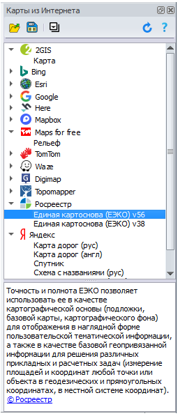

Карты из Интернета
Инструмент помещается на ленту Основные. При нажатии кнопки открывается панель в правой части экрана.
Для работы с модулем Карты из Интернета, а также для открытия карт, сохранённых с помощью этого модуля, вам потребуется работающее Интернет-соединение.
Используя модуль Карты из Интернета, можно:
- открывать карты из Интернета в виде слоя в вашем окне карты;
- сохранять карты в виде TAB-файла на своём компьютере.
В TAB-файл записывается только XML-ссылка на карту, что позволяет позднее её открывать напрямую из ГИС Аксиома, без обращения к модулю Карты из Интернета.
Панель Карты из Интернета
 |
Панель содержит список, элементами которого являются:
Кроме того, в верхней части панели находятся кнопки, представляющие операции с выбранными картами, а в нижней - раздел, в котором отображается в информации о карте. Кнопка Открыть Открывает и загружает карту, выбранную в списке Карты из Интернета, в новом или активном окне Карты. Кнопка Сохранить Сохраняет ссылку на интернет-карту в TAB-файле. В TAB-файл записывается только XML-ссылка на сервис, картографическая информация не переносится. Позднее этот TAB-файл можно открыть в ГИС Аксиома, не используя модуль Карты из Интернета. Для открытия полученного TAB-файла требуется работающее соединение с Интернетом. Кнопка Развернуть все / Свернуть все Разворачивает или сворачивает весь список карт. Закрыть или открыть список для определенного сервиса, можно, нажимая на кнопки в виде черных треугольников слева от названия сервиса. Кнопка Обновить Полностью обновляет каталог карт с Web-сайта модуля. |
Замечания о правообладателях
У каждой карты есть правообладатель. Вы можете пользоваться картой в соответствии с выбранной для неё лицензией.
Ссылка на лицензию отображается в информации о карте под списком сервисов.
Если у вас есть предложения по добавлению нового сервиса, пожалуйста, сообщите нам.
Домашняя страница проекта:
https://github.com/kasim73/TileServices
Лицензия: